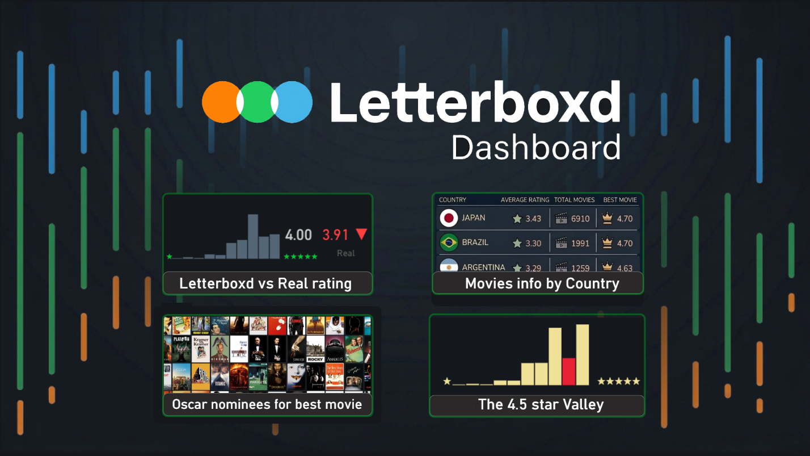
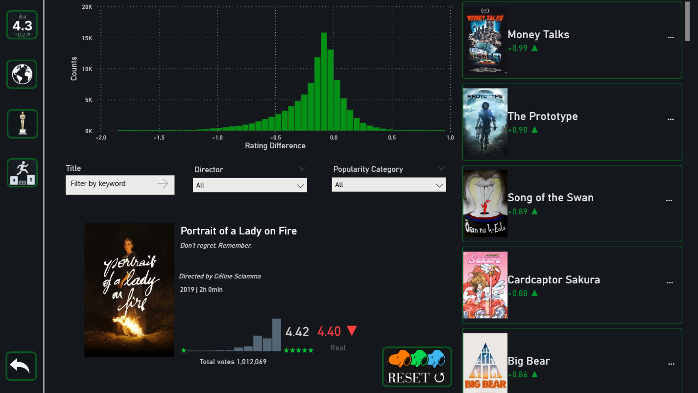
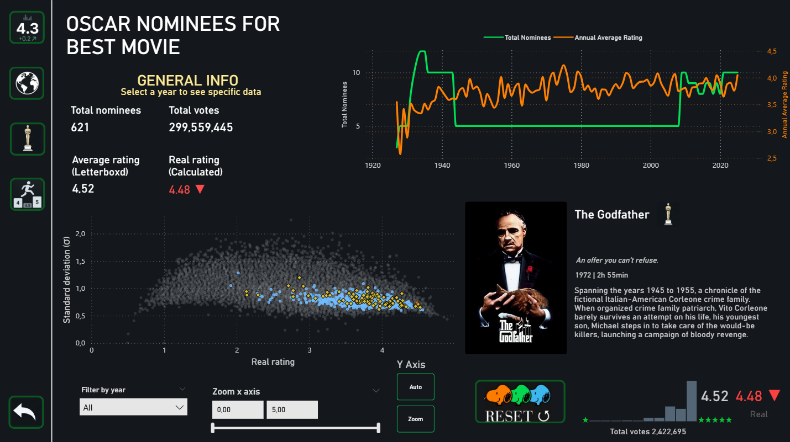
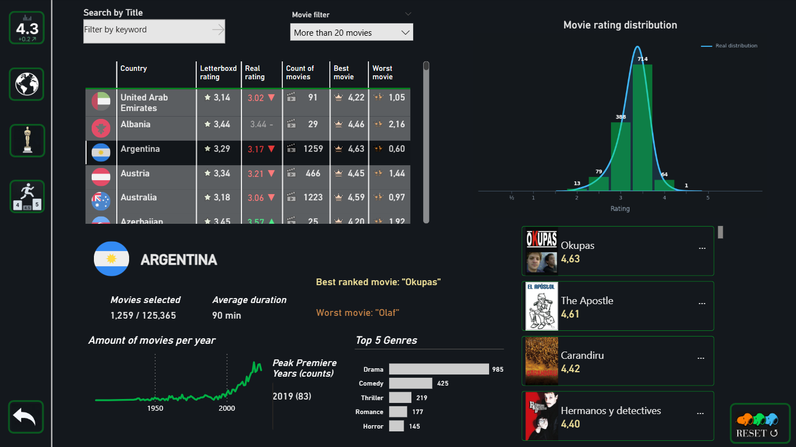
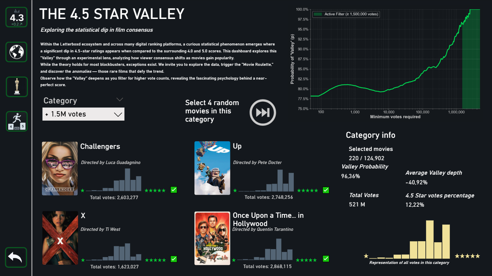

Project Overview
This project explores user rating behaviors and statistical anomalies within the Letterboxd movie app. The workflow involved a complete data pipeline: Python was used for data extraction, cleaning, and preliminary exploratory data analysis (EDA). SQL handled the structuring and necessary querying of the relational database. Finally, Power BI was utilized for advanced data modeling, DAX measure creation, and the design of the interactive visualizations shown below.
Please note: Due to Microsoft Power BI's security limitations, the interactive dashboard cannot be fully embedded here without a prior Microsoft account login. The live interactive dashboard is available at the very bottom of this page for authorized users, but you can explore high-resolution screenshots and insights of the project below.

1. Menu
This project involves the analysis of over 140K different movies, categorized into four main areas: the rating difference between the official Letterboxd score and the user-only score; movie information by country (including the best and worst films); an analysis of Oscar nominees for Best Picture; and finally, a social analysis of how users rate highly-ranked movies.

2. Letterboxd vs. Real ratings
In this tab, you can explore in detail how a movie can have a different score than the one actually given by users. It includes a comprehensive list where you can search for various titles to see how their ratings vary.

3. Oscar nominees & winnners
Each year, the Academy recognizes exceptional films. In this tab, you can search for all yearly nominations and winners through an interactive chart. This chart is based on the general audience experience, measured by standard deviation (σ). A lower value indicates a stronger consensus in the assigned score, while a high σ value reveals mixed opinions and divided ratings.

4. Country information
A brief report on the compiled movies by country, including the best and worst films according to user ratings. Disclaimer: Many movies in the database do not have a specified country of origin, which is why the total number of films in this section is lower.

5. The 4.5 Theory
Finally, a dashboard demonstrating how people tend to ignore a very specific rating score. This behavior can be observed directly and interactively. Users can explore different movie categories in real-time to see that this is a general phenomenon, though it becomes much more noticeable the more famous the movie is.
Interactive Dashboard
Requires Microsoft login authorization to view live data.